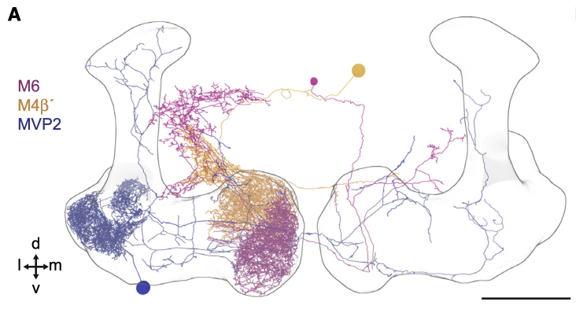
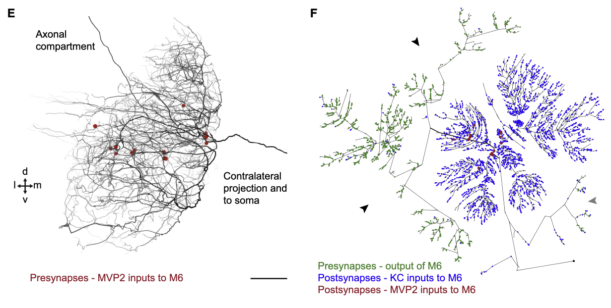
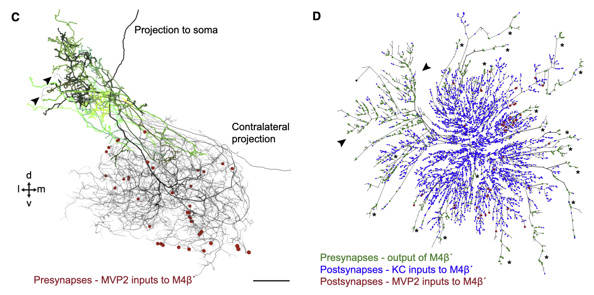

Tutorial for making Dendrograms¶
What are Dendrograms?
Dendrograms are 2D representations of 3D neuronal reconstructions which preserve the neuron’s topology (shape). The value of dendrograms is that specific presynaptic and postsynaptic connectivity can be visualised in an immediately parsable manner.
To appreciate what kind of structural information is contained within dendrograms, and how that relates to biological function, we will use the results from Felsenberg et al., 2018, Cell. The original dendrogram code was originally created for this paper which used manual, CATMAID reconstructions. The code has since been developed to handle reconstructions from different environments, such as the hemibrain volume released in 2020 by Janelia Research Campus.
As an example, let’s take a look at figure 4 from Felsenberg et al., 2018.
{kind=link}
We have three neurons:
MVP2 (blue, also known as MBON11 or MBON-y1ped>a/B)
M6 (magenta, also known as MBON01 or MBON-y5B`2a)
M4 (orange, also known as MBON03 or MBON-B`2mp)
MVP2 is presynaptic to both M6 and M4. However, the locations of MVP2 presynapses differ between the postsynaptic neurons M6 and M4.
For M6, we can see that the MVP2 presynapses are, in general, located at the root of the dendritic tree.
{kind=link}
In contrast, the MVP2 presynapses onto M4 are located on the distal branches of M4.
{kind=link}
This specific synaptic layout enables MVP2, which is GABAergic, to inhibit M6 more easily compared to M4. This inhibition is required for aversive memory extinction i.e. for learning that things that were once aversively conditioned, no longer are (forgetting).
How to create Dendrograms¶
This tutorial will focus on creating dendrograms using the hemibrain dataset, released by Janelia Research Campus in 2020.
First, import neuroboom’s dendrogram code and the other dependencies.
import matplotlib.pyplot as plt
import navis as nv
from navis.interfaces import neuprint as nvneu
from neuroboom import dendrogram as nbd
Neuroboom’s functionality heavily relies on a package called navis, created by Philipp Schlegel. So lets get some example neurons to work with.
# first lets first an example neuron id
example_neuron = navis.example_neurons(n = 1).id
# Now we have to fetch the skeleton -- this is important, the dendrogram code works on skeleton objects, not neuron objects
example_skeleton = nvneu.fetch_skeletons(example_neuron, heal = True)
# Plot the dendrogram
plt.clf()
fig, ax = plt.subplots(figsize = (10,10))
nbd.plot_dendrogram(example_skeleton, prog = 'dot')
plt.show()
{kind=link}
The prog argument here determines the type of layout. For dot, this produces a hierarchical layout, with the leaf nodes at the top of the hierarchy and the soma at the bottom Setting the prog argument to neato however, produces the layout seen in Felsenberg et al., 2018 and in the example below.
# Plot the neato dendrogram
plt.clf()
fig, ax = plt.subplots(figsize = (10,10))
nbd.plot_dendrogram(example_skeleton, downsample_neuron = 1e3, prog = 'neato')
plt.show()
{kind=link}
In the neato type of layout, imagine a spring representing each edge in the graph. The force in this spring is proportional to the length of the two nodes connected by that edge. The springs are allowed to then settle and an equilibrium is found which minimises the crossover of edges.
** NOTE: the neato layout can take some to time to calculate ** ** Therefore, it is highly recommended to downsample the neuron (reduce the number of nodes) **